Excitado por la promesa se enderezó en el momento en que el coche culminaba un cambio de rasante y aparecían majestuosas , abajo y a lo lejos , las bahías espumeantes por el rodillo del tozudo oleaje.
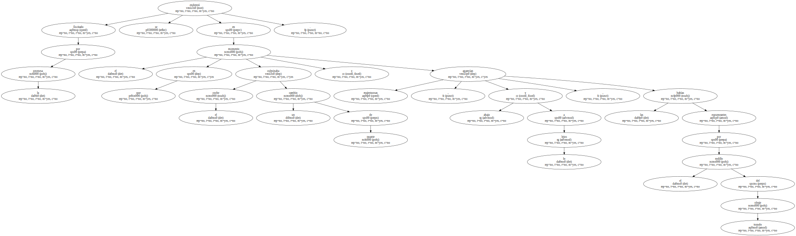- - Mucho viento.
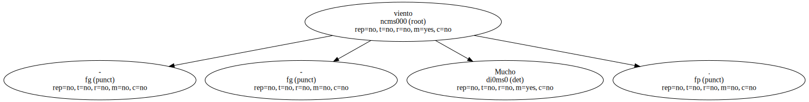M menos tiene una velocidad de sesenta kilómetros por hora.
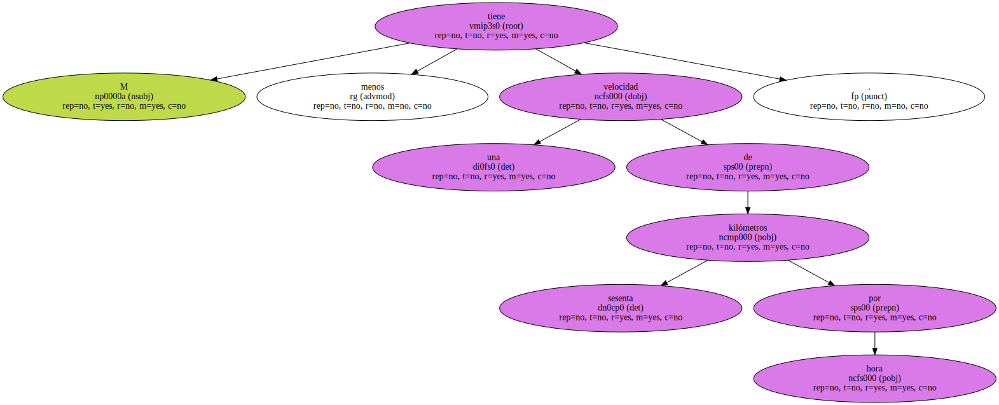El conductor volvió el rostro de gordo gitano hepático hacia su cliente.
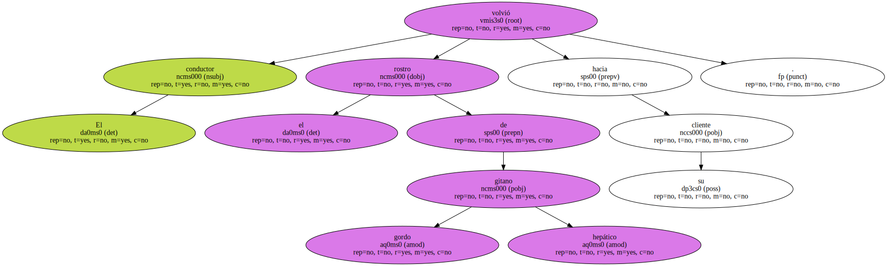- - Entiende de vientos.
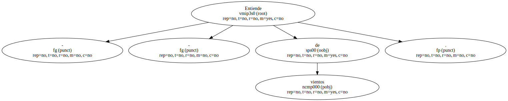- Tiene un yate.
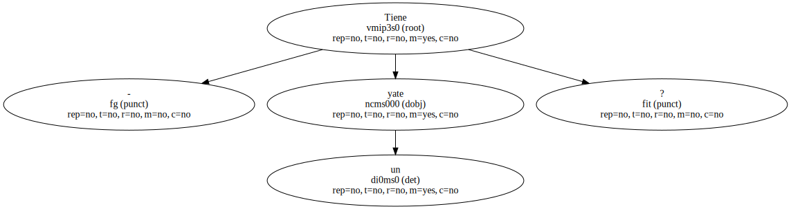- - Soy marino.
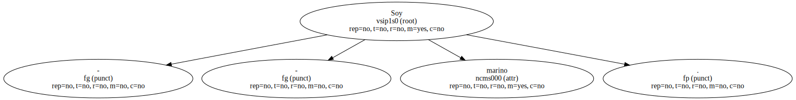- - Marino ! - - exclamó el hindú con entusiasmo.
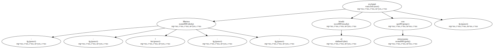Nunca he salido de Trinidad.
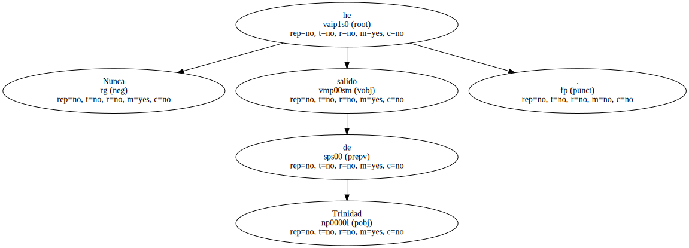Ni siquiera he ido a Tobago.
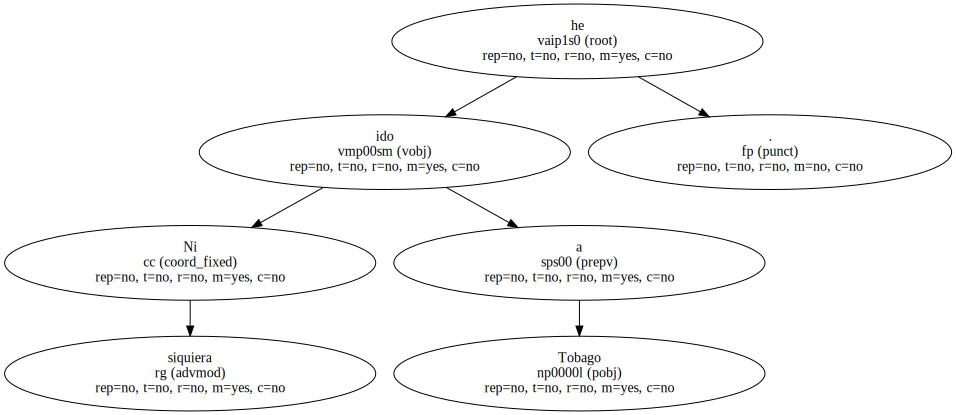Pero de joven me habría gustado ser marino para recorrer el canal de Panamá.
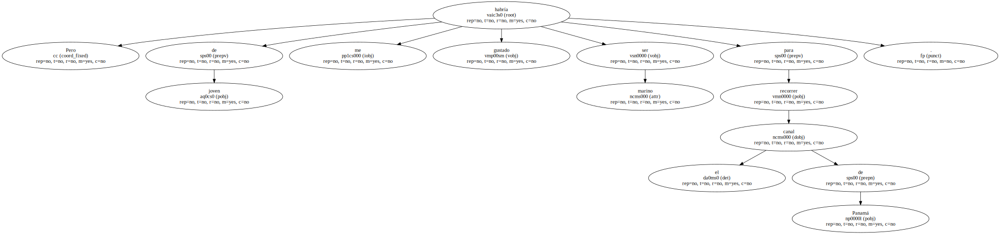Hay un barco que va desde Vancouver hasta Jamaica pasando por el canal de Panamá.
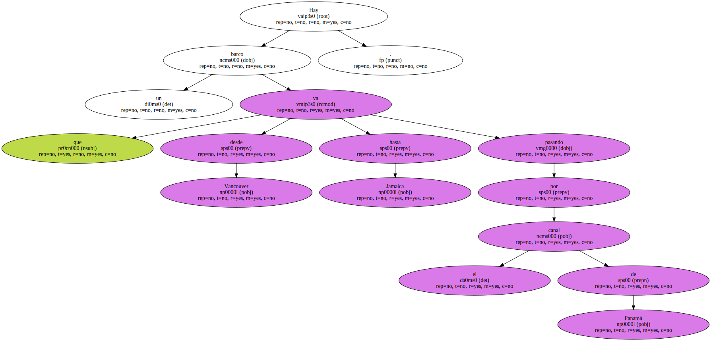- Es usted marino en ese barco.
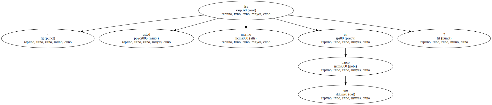- - El mundo está lleno de barcos.
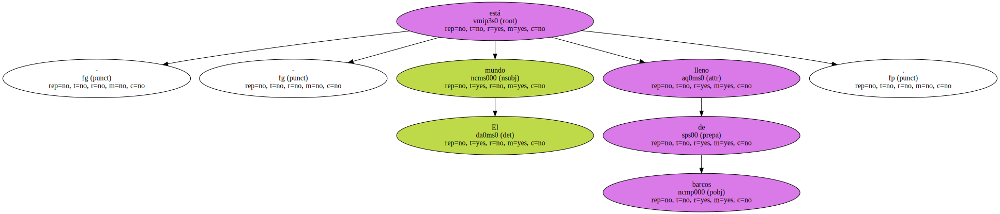- - Ya sé ya sé.
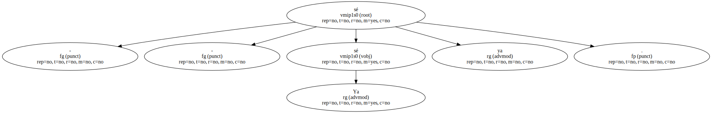- - Mi barco es como una fábrica.
Aprietas un botón y te vas al norte.
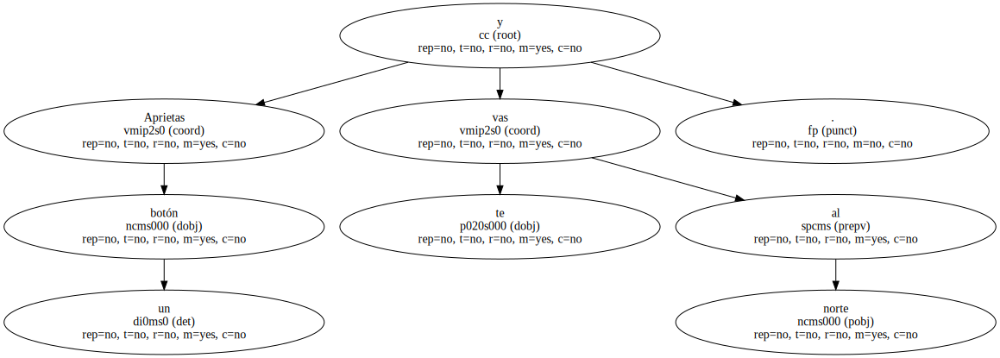Aprietas otro botón y te vas al sur.
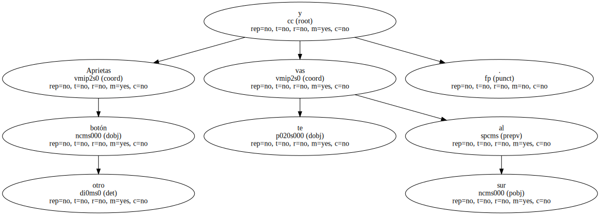- - Con el tiempo harán taxis sin taxistas.
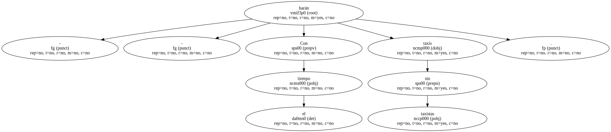La melancólica observación quedaba contrastada por el frágil esplendor de la naturaleza iluminada en Maracas Bay.
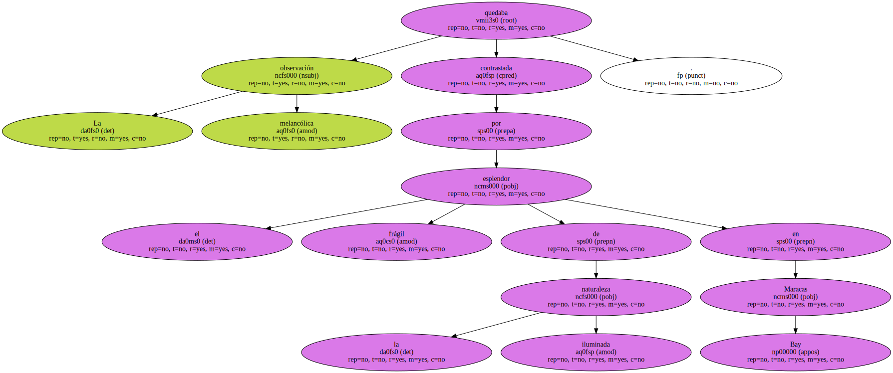El coche aparcó junto a los cobertizos de los vestuarios y duchas.
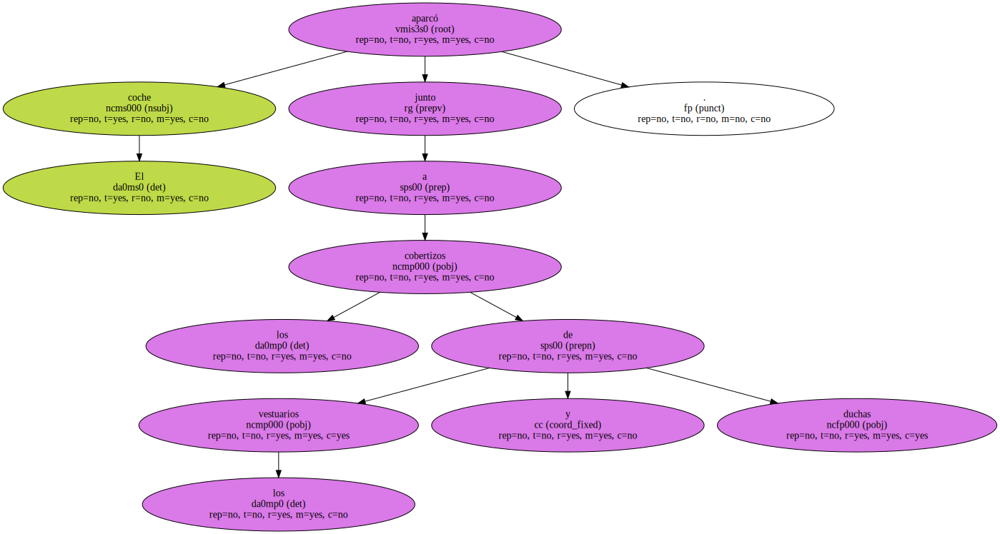- - Aproveche el sol y no se preocupe por mí.
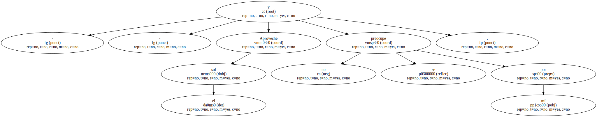Yo esperar cuanto haga falta.
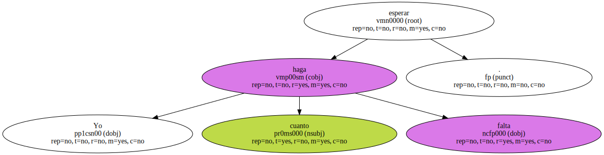Con la urgencia de un animal nocturno al que se le escapa el sol , Ginés saltó del vehículo y se fue hacia la mesa de recepción de los vestuarios.

Una mujer hindú le entregó un ticket y le mostró el alineamiento de los pequeños armarios donde guardar la ropa.
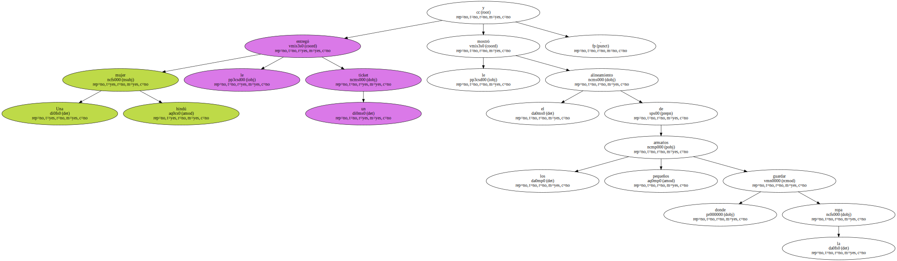Primero se desvistió entre la húmeda penumbra de unas habitaciones de madera entristecida por la eterna sombra a la que le condenaban las altas palmeras y la corrosión de una humedad goteante en las duchas , perlada aquí y allá en gotas de agua que parecían vivir y reproducirse.
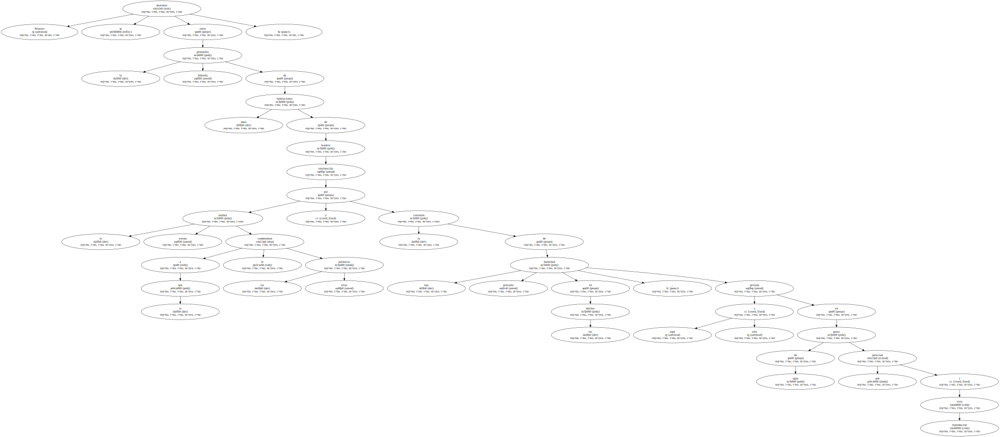